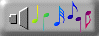

♫ Colecao de MIDIs do Marcelo!! ♫
♫ Colecao de MIDIs do Marcelo!! ♫
Ola!! Aqui eu coloco os meus MIDIs favoritos para voce ouvir!!
Baixei esses MIDIs de varios sites da internet e selecionei os MELHORES!!
Para ouvir: clique em Play no player abaixo de cada
musica!!
Para salvar no seu computador: clique em ⇩
Baixar!!
[GIF musica 40x40]'">
[GIF equalizador 60x30]'">
[GIF CD girando 40x40]'">
♫ Lista de MIDIs:
► 01 - Aladdin
► 06 - Tetris
COMO USAR:
1. Clique em Play ▶ para ouvir direto na pagina
2. Clique em ⇩ Baixar para salvar o arquivo .mid
3. Aproveite a musica!!! ♫♫♫
* Necessario conexao com a internet para carregar os instrumentos
* Compativel com qualquer navegador moderno
1. Clique em Play ▶ para ouvir direto na pagina
2. Clique em ⇩ Baixar para salvar o arquivo .mid
3. Aproveite a musica!!! ♫♫♫
* Necessario conexao com a internet para carregar os instrumentos
* Compativel com qualquer navegador moderno

[GIF animado de musica/notas 300x40]'">
Tem algum MIDI legal? Me manda por email!! ma_jogos@bol.com.br
Vou avaliar e se for bom coloco aqui na colecao!!
Vou avaliar e se for bom coloco aqui na colecao!!